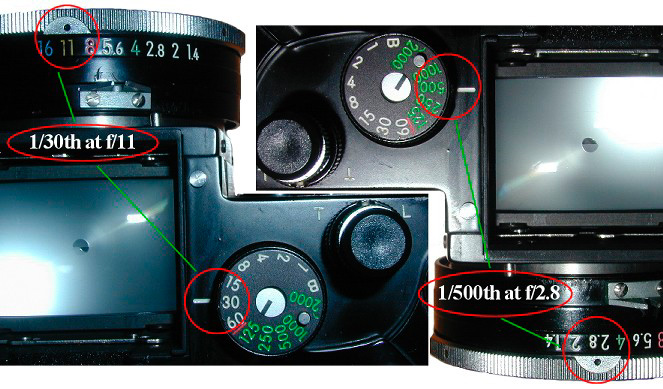

|
Camera (very) FundamentalsVersion 2.1, page 5, © 2002, 2006 by Dale Cotton, all rights reserved Chapter Five: ReciprocityIn going from our Mark I to our Mark IV camera we've retraced a hundred years of the history of camera engineering. The Mark IV has all the essential pieces to do photography. There's only one problem: we still don't really know how to use it. Digital: Again, everything on this page applies equally to film and digital cameras. To use a camera we need one extremely simple but critical concept. To get a handle on it let's go back to the key fact from Chapter One:
Fig 3. Key fact: It takes a doubling of the actual brightness of light for us to perceive a single step in apparent brightness. Each step going from left to right in Fig 3 reflects twice the number of photons as the one before it. The modern camera has three main dials for controlling exposure: ISO, shutter, and aperture (f/stops). The markings on each of these dials seems arbitrary: The ISO control on most modern cameras has all or most of the following settings: 6 - 12 - 25 - 50 - 100 - 200 - 400 - 800 - 1600 - 3200 - 6400 Each choice represents a doubling/halving of light sensitivity. Then there is the shutter speed dial. Here are the typical settings again: 2' - 1' - 1/2' - 1/4' - 1/8' - 1/15' - 1/30' - 1/60' - 1/125' - 1/250' - 1/500' - 1/1000' - 1/2000' And, of course, each choice represents a doubling/halving of exposure time. Finally, the aperture dial: f/1 - f/1.4 - f/2 - f/2.8 - f/4 - f/5.6 - f/8 - f/11 - f/16 - f/22 - f/32 - f/64 Each marking represents a doubling/halving of the amount of light that can reach the film or the sensor of a digital camera from the lens. Originally the term "stop" was used as we used it in Chapter Three, to refer to the amount of light stopped by the aperture. Since then "stop" has taken on a generalized meaning in photography: any doubling/halving of brightness is called a one stop change in exposure value. Going from ISO 400 to ISO 800 - one stop. Going from 1/4 sec. to 1/2 sec. shutter - one stop. Going from f/8 to f/11 aperture - one stop. To put this principle to use, let's first look at the normal way of operating. Your first job is to decide which ISO rating you are going to use for your shots and load that film into your film camera or choose that setting on your digital camera. That leaves you with shutter and aperture to control your exposure. Key facts: To increase your exposure by X stops you can either increase your shutter speed by X stops or decrease your aperture by X stops.  Fig 12. 1/30th at f/11 = 1/500th at f/2.8 Let's say the meter indicates the correct exposure is 1/30th sec at f/11. You decide to cut your exposure time by one-quarter (perhaps to freeze the action of a ball game) which means going from 1/30th to 1/60th to 1/125th to 1/250th to 1/500th, which is four stops. To keep your exposure good, you have to compensate for this change by getting more light on to the film or sensor. So you go to a wider aperture: from f/11 to f/8 to f/5.6 to f/4 to f/2.8. 1/30th at f/11 is equal to 1/500th at f/2.8. It's also equal to 1/60th at f/8 and 1/125th at f/5.6, etc. Choose whichever combination gives you the best compromise between the depth of field you want and the shutter speed you want. ...And I think that covers the minimum you'll need to understand the manual and use your camera. Read this over five or ten times and it might even begin to make sense. ;) Further ReadingThe second editions of The Camera and The Negative by Ansel Adams, after more than half a century, remain the keystone of photography. While their primary focus is black & white film photography, most of the concepts apply to colour and digital. These books are clear and simply written - a joy to read.
|
| - 5 - |